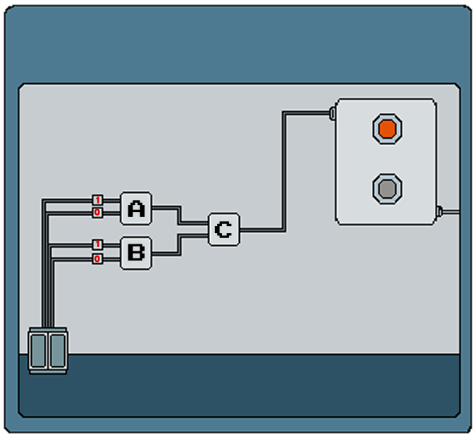

DOOR
#1 Make the output 1 using both AND & OR gates to unlock the engineering workshop door
HOW TO PLAY
1. Toggle the logic gates using the buttons on the right
2. Set the correct configuration to make the output light turn
on
3. Submit your answer when ready

A
AND Gate
B
AND Gate
C
AND Gate